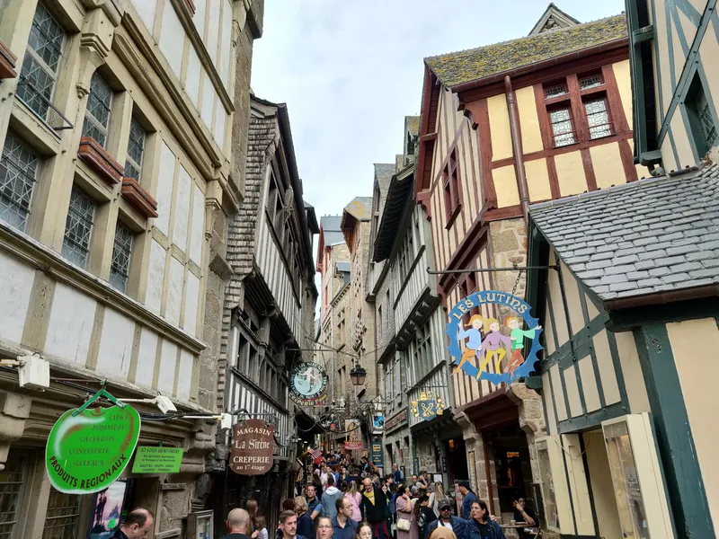

Sì, si può visitare Mont-Saint-Michel da Parigi in un solo giorno. Ma sarà lungo, e il modo in cui viaggi cambia quasi tutta l'esperienza.
Ogni anno circa tre milioni di persone visitano Mont-Saint-Michel, e la maggior parte arriva nella stessa fascia ristretta, tra tarda mattina e primo pomeriggio. La tua impressione dipende quindi non solo dal mezzo scelto, ma dall'ora di arrivo. Pianifica bene il percorso e vedrai un'isola completamente diversa.
Questa guida è per chi è indeciso tra treno, tour organizzato e auto, e deve capire se basta un giorno o se è meglio dormire lì. E poiché le tue ore sulla roccia sono poche, mostriamo anche dove conviene un'audioguida TouringBee dell'isola in autonomia, che puoi avviare già in treno e usare offline al tuo ritmo.
Qui sotto: orari reali dei bus 2026 al minuto, come ottenere il biglietto per l'abbazia, cosa fare in poche ore, dove mangiare e quanto costa tutto, più un verdetto onesto dai nostri viaggi su quando una notte batte la corsa di un giorno. Se ti interessa solo il trasporto, vedi la nostra guida dedicata: come arrivare a Mont-Saint-Michel.
La gita in breve
In sintesi: vale la pena la gita in giornata?
Ne vale la pena se il tuo tempo a Parigi è limitato e sei pronto a una giornata lunga. Da porta a porta sono 13–15 ore, di cui circa 8 di viaggio. L'opzione più rapida con i mezzi pubblici è un TGV fino a Rennes più il bus in coincidenza; l'alternativa è un tour guidato con transfer incluso.
Non ne vale la pena se tieni alla luce dell'alba o della sera, a un ritmo tranquillo e ad aggiungere Saint-Malo. In quel caso, fermati a dormire.
Da prenotare in anticipo: il TGV, il bus Rennes–Mont-Saint-Michel (gli autisti non vendono biglietti a bordo) e un biglietto per l'abbazia a orario fisso.
Si riesce davvero da Parigi in un giorno?
Si riesce. Mont-Saint-Michel si trova a circa 360 km a ovest di Parigi, e la combinazione treno + bus è pensata proprio per il ritorno in giornata: il vettore lo dice chiaramente, ogni corsa è coordinata con il TGV da Parigi e ritorno.
Il prezzo da pagare è il tempo. Parti presto e torni tardi.
C'è un secondo intoppo che ci ha sorpreso al primo viaggio: una visita in giornata ti scarica sull'isola proprio nelle ore di punta. Il grosso dei pullman arriva tra le 10:00 e le 11:00 e riparte verso le 16:00–17:00. A mezzogiorno risali la stretta Grande Rue spalla a spalla. A luglio e agosto l'isola può contenere circa 15.000 persone al giorno, e se hai solo quelle ore diurne, è proprio quella la folla che troverai. Leggi la sezione sul pernottamento prima di prenotare.

Treno, tour o auto
In treno è la via pubblica più rapida. Il TGV da Paris-Montparnasse a Rennes impiega da 1h25, poi il bus Keolis Armor copre l'ultimo tratto in 1h15. Attenzione: ci sono solo tre bus al giorno per senso, non è una navetta ogni mezz'ora, quindi tieni l'orario a portata di mano fin dall'inizio. Prenota il TGV presto e le tariffe scendono molto; puoi controllare orari e prezzi su SNCF qui.
Con un tour non pensi affatto alle coincidenze. Molti includono l'ingresso all'abbazia e alcuni aggiungono Saint-Malo. Costa di più e la giornata segue il ritmo di altri, ma per chi viaggia da solo spesso è paragonabile come spesa. Puoi vedere le gite in giornata da Parigi per confrontare cosa è incluso.
In auto è il modo migliore per battere la folla. Da Parigi si prende la A13, poi la A84 verso Avranches, circa 4 ore. L'unico trucco che conta: partire da Parigi verso le 06:00 e arrivare prima dei pullman. Se non hai l'auto, puoi confrontare le auto a noleggio per il viaggio e ritirarla a Parigi o in aeroporto.
Scendi da Parigi in auto?
Confronta le auto a noleggio e ritirala in città o a CDG/Orly: il modo flessibile per arrivare prima dei pullman.
Una tabella di marcia realistica in treno
Ecco come si presenta in cifre per la stagione dal 30 marzo al 1° novembre 2026.
Andata
- 07:00 — TGV da Paris-Montparnasse, arrivo a Rennes 08:25 (la corsa più rapida)
- 08:45 — bus dall'autostazione di Rennes, arrivo alla fermata «Mont Saint-Michel» alle 10:00
- 10:00–10:20 — navetta gratuita «Le Passeur» fino ai piedi della roccia (circa 10–12 minuti), o a piedi lungo la strada rialzata (circa 35 minuti)
La coincidenza a Rennes è di soli 20 minuti, ma l'autostazione è attaccata alla stazione ferroviaria e la corsa è pensata proprio per questo treno. Se preferisci non rischiare, prendi il TGV un'ora prima e il bus successivo alle 10:45.
Ritorno
- 16:45 — bus da Mont-Saint-Michel, arrivo a Rennes alle 18:00
- 18:00 — ultimo bus, a Rennes alle 19:15, poi TGV serale per Parigi
Ti restano circa 6 ore sull'isola con il bus delle 16:45, e quasi 8 con quello delle 18:00, molto più di un tour standard, che di solito dà 4–5 ore.
La regola che salva le gite in giornata: informati sull'orario del bus di ritorno prima di salire all'abbazia, e lascia 30–45 minuti per andare dall'isola alla fermata.
Come ottenere il biglietto per l'abbazia
L'abbazia è l'unico posto dove, con un programma stretto, non puoi permetterti la fila. In stagione la biglietteria sul posto può costarti 1,5–2 ore sotto il sole o la pioggia. Compra online in anticipo, per una fascia oraria precisa: i biglietti escono un mese prima.
Prezzi 2026:
- €16 — dal 1° aprile al 30 settembre 2026
- €13 — dal 1° ottobre 2026 al 31 marzo 2027
- Gratis — under 18 (in famiglia) e 18–25enni dell'UE
Un trucco poco noto: con un biglietto del treno Parigi–Mont-Saint-Michel, l'ingresso all'abbazia costa €13 invece di €16 se lo mostri entro 5 giorni dal viaggio.
Orari: dal 1° maggio al 31 agosto 9:00–19:00; dal 1° settembre al 30 aprile 9:30–18:00. Ultimo ingresso un'ora prima della chiusura. Chiuso il 1° gennaio, 1° maggio e 25 dicembre.
Sali subito appena arrivi, prima del picco di mezzogiorno, e lascia il villaggio e i bastioni per dopo: sono gratuiti e sempre aperti. Tutti i dettagli su prezzi e orari nella nostra guida ai biglietti dell'abbazia.
Prenota un biglietto per l'abbazia a orario
Prenota un orario di ingresso preciso ed evita la coda alla biglietteria: biglietto mobile, cancellazione gratuita nella maggior parte delle opzioni.
Cosa fare in poche ore
Con 4–6 ore sull'isola, sii spietato. Entra dalla Porta del Re, ma non salire dritto per la Grande Rue affollata: devia sui bastioni o su una scala laterale. Portano all'abbazia altrettanto bene, con molte meno persone e una vista migliore.
Poi: l'abbazia con il tuo biglietto a orario, una passeggiata sui bastioni e sulla Torre Nord, il cimitero silenzioso, uno spuntino veloce. Lascia i musei a una visita più lunga.
Proprio perché le ore sono poche, l'audioguida si ripaga. L'audioguida TouringBee dell'isola va al tuo ritmo, senza gruppo e senza orari fissi. Funziona offline: una mappa GPS mostra dove sei, e ogni traccia la avvii tu arrivando sul posto.
Se il tempo è davvero poco
In un viaggio breve, non provare a vedere tutto in una volta.
Con circa quattro ore:
- visita l'abbazia;
- percorri i bastioni;
- sali ai punti panoramici migliori;
- ammira la baia.
Musei, un pranzo lungo e passeggiate senza fretta non ci stanno davvero.
Con circa sei ore:
- esplora l'abbazia senza fretta;
- percorri i bastioni;
- fai un salto al vecchio cimitero;
- gironzola per i vicoli tranquilli;
- pranza con calma.
Proprio per questo una visita in autonomia lascia di solito ricordi più belli di un tour dagli orari rigidi.
Dove mangiare
Il tempo è poco, meglio pianificare il pranzo che cercarlo al volo. La cosa più rapida e sicura è una galette o una crêpe in una creperia del villaggio: economica, veloce, da mangiare camminando.
La famosa omelette della Mère Poulard, sbattuta e cotta sul fuoco vivo, è un'esperienza, non un pasto. Nel 2026 le omelette a menu partono da circa €38, la versione al tartufo costa €45, e c'è un menù da €35 con omelette e dolce. Decidi tu: una spesa consapevole, o un buon motivo per ordinare agnello normanno o una galette con sidro a molto meno.
E porta acqua. Sulla Grande Rue una bottiglia costa diverse volte il prezzo di terraferma. Altre opzioni nella nostra guida gastronomica (in arrivo).
Il viaggio di ritorno
È al ritorno che le gite in giornata saltano più spesso. Ci sono tre bus al giorno da Mont-Saint-Michel a Rennes: 11:35, 16:45 e 18:00. L'ultimo arriva a Rennes alle 19:15. Se lo perdi, non c'è più modo di uscire con i mezzi pubblici.
Compra il biglietto online in anticipo: non si vende a bordo e i posti sono limitati. Puoi cambiarlo fino a 24 ore prima, per €2,50. Lascia il tempo per andare dall'isola alla fermata: la navetta impiega circa 10–12 minuti più l'attesa, a piedi lungo la strada rialzata circa 35. Trenta-quarantacinque minuti di margine vanno benissimo. Gli orari invernali sono più ridotti di quelli estivi, controllali a parte.
Bisogna preoccuparsi della coincidenza a Rennes?
No: in pratica è molto più semplice di quanto sembri. L'autostazione è proprio accanto alla stazione di Rennes, e l'orario dei bus è pensato sull'arrivo dei treni da Parigi. La maggior parte dei viaggiatori fa il cambio senza problemi, anche con un po' di bagaglio. Se viaggi con bambini piccoli, una valigia grande o preferisci non correre, prendi un treno prima e il bus successivo.
L'alternativa: fermarsi a dormire

Se il tuo programma ha una notte libera, cambia tutto il viaggio, ed è qui che insistiamo di più.
Dopo le 18:00 Mont-Saint-Michel diventa un altro posto. I bus se ne vanno, i vicoli si svuotano, e attraversi una città medievale silenziosa tra il grido dei gabbiani e il rumore della marea che sale. Di notte l'abbazia è illuminata e sembra un castello sospeso sulla baia. All'alba i bastioni sono solo tuoi. Quando ci siamo fermati a dormire, quelle ore tranquille valevano ogni euro in più sulla camera.
E non è necessario pagare i prezzi dell'isola. Le camere dentro le mura sono care e prenotate con mesi di anticipo. Il compromesso ragionevole è la zona pedonale di La Caserne proprio al ponte: più moderna, più economica e a una breve passeggiata o navetta dall'isola svuotata la sera. Puoi confrontare gli hotel vicino a Mont-Saint-Michel su Booking.
Un paio di cifre in più a favore del pernottamento se sei in auto: da settembre a giugno il parcheggio è gratis dalle 18:30 alle 03:00. A luglio e agosto la navetta va dalle 7:00 all'1 di notte, quindi la serata sull'isola non è tagliata.
Una trappola: la cena. Dopo le 18:00–19:00 chiudono la maggior parte delle creperie, panetterie e botteghe economiche dell'isola. Restano pochi costosi ristoranti d'albergo, su prenotazione. Prenota in anticipo, o fai come noi: compra formaggio, baguette e sidro sulla terraferma e cena sui bastioni al tramonto.
Ti fermi a dormire vicino alla baia?
La zona di La Caserne, al ponte, è più economica dell'isola e a una breve navetta dalle vie svuotate al crepuscolo.
Gita in giornata o pernottamento?
Gita in giornata: se hai poco tempo, attraversi la Francia in fretta e ti va bene vedere Mont-Saint-Michel per il gusto di vederlo, folla compresa.
Pernottamento: se vuoi atmosfera, foto e quiete. E indispensabile se aggiungi Saint-Malo: lì non c'è nemmeno da discutere.
Per confrontare gli alloggi sull'isola e sulla terraferma, vedi la nostra guida su dove dormire; per l'abbinamento con Saint-Malo, il nostro itinerario di due giorni. (Entrambi in arrivo sul sito.)
Quanto costa
In treno, la logica: un TGV Parigi–Rennes andata e ritorno (il prezzo dipende molto da quanto prima prenoti), il bus da €25 andata e ritorno (da €20 per gli under 26), più €16 per l'abbazia. C'è anche un biglietto combinato Rennes–Mont-Saint-Michel–Saint-Malo al prezzo di un normale andata e ritorno.
Un tour costa di più all'inizio ma riunisce trasporto e spesso abbazia in un unico prezzo.
In auto, a benzina e pedaggi aggiungi il parcheggio sulla terraferma. Nel 2026, per un'auto:
| Durata | Inverno | Media stagione | Alta stagione |
|---|---|---|---|
| Fino a 3 ore | €10 | €16 | €20 |
| Fino a 6 ore | €12 | €19 | €24 |
| Fino a 24 ore | €14 | €22 | €28 |
I primi 30 minuti sono sempre gratuiti, e prenotare online fa risparmiare €2. La navetta dal parcheggio all'isola è gratuita tutto l'anno.
Percorri l'isolotto con un'audioguida

Audioguida autonoma di Mont-Saint-MichelAccesso immediato
- 100% offline: scaricala prima di arrivare (segnale debole sulla strada rialzata)
- Mappa GPS offline — ogni audio lo avvii tu sul posto
- 8 lingue, narrazione con voce reale
- Funziona su iOS e Android
Con solo poche ore sulla roccia, è il contesto a renderle preziose. L'audioguida TouringBee dell'isola ti porta dalla riva alle porte dell'abbazia: una mappa offline mostra dove sei, e ogni traccia la avvii tu arrivando. Niente internet, più lingue, al tuo ritmo. Consiglio: scaricala in treno, vicino all'isola non c'è Wi-Fi e il segnale è debole.
Consigli pratici
- Prendi il primo treno o il primo tour: l'isola è al meglio prima di mezzogiorno e dopo che la folla si dirada.
- In estate prenota sempre un biglietto per l'abbazia a orario preciso.
- Controlla gli orari del bus di ritorno e del TGV appena arrivi, non un'ora prima di partire.
- Scarica le mappe e l'audioguida in anticipo: sulla strada rialzata il segnale è debole.
- Indossa scarpe comode; ci sono moltissimi gradini. E porta una giacca a vento: nella baia c'è vento e fa fresco anche quando Parigi scotta.
- Tieni il pranzo semplice, così non si mangia le tue poche ore.
Errori frequenti
Il classico: un treno tardivo e arrivo in pieno affollamento di mezzogiorno con un paio d'ore a disposizione. Poi: fare la coda alla biglietteria invece di avere un biglietto a orario; perdere l'ultimo bus per Rennes (ce ne sono solo tre); e voler "vedere anche Saint-Malo al volo" lo stesso giorno, che è troppo. E sottovalutare la scala: da porta a porta sono 13–15 ore, non un'uscita dopo colazione.
Domande frequenti
Si può visitare Mont-Saint-Michel da Parigi in un giorno?
Sì. Un TGV mattutino fino a Rennes più il bus, o un tour organizzato. Conta 13–15 ore da porta a porta.
Qual è il modo più rapido?
Il TGV da Paris-Montparnasse a Rennes (da 1h25), poi il bus (1h15): circa 3–3,5 ore per senso.
Tour o treno?
Un tour è più semplice e spesso include l'abbazia, ma segue un orario fisso. Il treno è più flessibile e più economico se prenoti presto, ma richiede attenzione alle coincidenze.
Quante ore si hanno davvero sull'isola?
Con il bus delle 08:45 all'andata e quello delle 16:45 al ritorno, circa 6 ore. Con l'ultimo bus alle 18:00, quasi 8. Un tour standard dà 4–5.
Non è meglio fermarsi a dormire?
Se tieni all'alba, alla luce della sera, a un ritmo tranquillo o a Saint-Malo, sì. Dopo le 18:00 l'isola diventa un posto completamente diverso.
Quanto costa una gita in giornata?
Dipende dal mezzo e da quanto prima hai prenotato. Come riferimento: bus da €25 andata e ritorno, abbazia €16, parcheggio sulla terraferma €24–28 al giorno in estate.
Continua a esplorare
Il nostro consiglio
Se è la tua prima volta in Francia e hai poco tempo, pianifica la gita in giornata con fiducia. Partendo presto vedrai l'essenziale, visiterai l'abbazia e tornerai a Parigi la sera stessa. Se il programma concede un po' più di libertà, aggiungi una notte: sono la sera e il primo mattino a mostrare Mont-Saint-Michel al suo meglio, senza il trambusto, le lunghe code e il flusso denso di visitatori.
In sintesi
Una gita in giornata da Parigi funziona. Prendi la prima corsa, prenota l'abbazia a orario fisso, aggira la calca della Grande Rue passando dai bastioni e tieni a mente il bus di ritorno. Così camminerai sulle mura di uno dei grandi luoghi di Francia e dormirai comunque a Parigi.
Ma se ti importano le foto e il silenzio, regala a Mont-Saint-Michel una notte. Dopo le sei di sera diventa un luogo che la maggior parte dei visitatori in giornata non vede mai.
In ogni caso, l'isola premia chi arriva con un piano. Avvia l'audioguida TouringBee già in treno, e quando raggiungi il centro visitatori sarai pronto a sfruttare ognuna delle tue poche ore.
Alcuni link in questa pagina sono link di affiliazione (SNCF, GetYourGuide, Tiqets, Booking.com, TouringBee). Se prenoti tramite essi, potremmo ricevere una piccola commissione, senza costi aggiuntivi per te. Non influenza mai ciò che consigliamo. Vedi la nostra informativa sull'affiliazione.